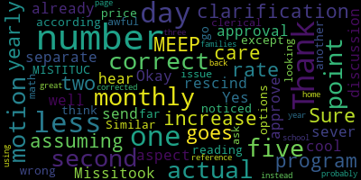

[Graham]: How does this sound? Are we good? Okay, good sunny afternoon. The seventh regular meeting of the Medford School Committee will be held on April 14th, 2025 with executive session at 5.15 and a regular meeting starting on or about 6 p.m. Please be advised that there'll be a meeting of the Medford School Committee held at Howard Alden Memorial Chambers, Medford City Hall via remote participation That is not true. We are here in Alden Memorial Chambers and via remote participation. Sorry about that. The meeting is being recorded. The meeting can be viewed live on Medford Public Schools YouTube channel through Medford Community Media on your local cable channel, which is Comcast 98 or 22 and Verizon channel 43, 45 or 47. Participants can call or log in by using the following. The meeting ID is 997-1865-1313. Item number one on our agenda is to call the roll. Member Ruseau, will you call the roll?
[Ruseau]: Member Branley is absent. Member Graham?
[0FSPW3s1sRE_SPEAKER_09]: Here.
[Ruseau]: Member Intoppa? Member Olapade?
[Lungo-Koehn]: Here.
[Ruseau]: Member Reinfeld?
[Lungo-Koehn]: Here.
[Ruseau]: Member Ruseau? Here. Mayor Lungo-Koehn?
[Lungo-Koehn]: Present.
[Graham]: Six present, one absent, if all may rise to salute the flag. I pledge allegiance to the flag of the United States of America and to the Republic for which it stands, one nation under God, indivisible, with liberty and justice for all. Item number three on our agenda is executive session. So we have executive session of the Medford School Committee pursuant to Mass General Law, Chapter 30A, Section 21A, to conduct strategy session on the basis that an open meeting will have a detrimental effect on the bargaining positions of the Medford School Committee. Specifically, the Medford School Committee will be discussing ongoing collective bargaining negotiations with the Medford Teachers Association. and executive session of the Medford school committee pursuant to master law chapter 30 a section 21 a four to discuss deployment of security personnel or devices or strategies with respect there too. Is there a motion to enter executive session? Motion to enter executive session by member Intoppa, seconded by member Reinfeld. Member Ruseau, will you call the roll?
[Ruseau]: Member Graham.
[Graham]: Yes.
[Ruseau]: Member Intoppa. Yes. Member Olapade. Yes. Member Reinfeld. Yes. Member Rossell. Yes. Mayor Lungo-Koehn.
[Graham]: Yes. Six in the affirmative, one absent. We will enter executive session and we expect to reconvene in public session immediately following conclusion of the executive session at approximately 6 p.m. Thank you, everyone. Thank you everybody, we're back. Sorry for the delay that took longer than expected. We do have one vote that came out of executive session that we need to just vote on the floor. So members, so if you can read the motion for the security contract.
[Ruseau]: Absolutely. The motion is to approve this project and send a request to the mayor and council the three options for their consideration with a stated preference for the option with the greatest expenditure of free cash to reduce the annual payments for the district. And I can't be more specific other than to say it's related to security.
[Graham]: And that motion was by member Reinfeld seconded by Member Ruseau.
[Ruseau]: Was it?
[Graham]: Yes. So we do have to take that vote again on the floor. So member Rousseau, if you can call the roll, please.
[Ruseau]: Member Granley is absent. Member Graham.
[Graham]: Yes.
[Ruseau]: Member Intoppa.
[Intoppa]: Yes.
[Ruseau]: Member Olapade. Yes. Member Einfeld. Yes. And member Rousseau, yes. And Mayor Lungo-Koehn. she drop off again?
[Graham]: Mayor Mayor, are you on zoom and able to unmute?
[Ruseau]: I don't see her on zoom.
[Graham]: Okay. Five in the affirmative. Zero in the negative two absent motion passes. Next up, we have our consent agenda. So for this evening, we have approval of minutes for the regular meeting of April 7th. Is there a motion to approve the consent agenda? Motion to approve the consent agenda by member Olapade, seconded by member Reinfeld. All those in favor? All those opposed? Motion passes. Under the report of the superintendent, we have a recommendation to approve a ratified contract with the Medford Teachers Association, Dr. Suzanne Galusi.
[Galusi]: Good evening. Thank you very much. So on Tuesday, last Tuesday, April 8th, the members of the Medford Teachers Association voted to ratify their contract proposal. And we have before this body a vote of the Medford School Committee to accept the contract.
[Ruseau]: Motion to approve.
[Graham]: There's a motion to approve by Member Ruseau, seconded by Member LaPotte. Roll call, please.
[Ruseau]: Member Graham?
[Graham]: Yes.
[Ruseau]: Member Intoppa? Yes. Member LaPotte? Yes. Member Reinfeld?
[Graham]: Yes.
[Ruseau]: Member Ruseau, yes. And I believe the mayor's still absent, but also couldn't vote anyways.
[Graham]: So, five in the affirmative, two absent. Motion is approved. Our contract with the Medford Teachers Association is ratified for the next three years. The crowd goes wild here in chambers if you can't see them. I just wanted to say thank you to the bargaining team of the MTA led by President Guillen and Vice President Regano. We worked really hard to make this happen. We worked really hard to bring the promises of the override to life in a real way for students. And that will mean things like 15 more minutes in the school day, increased dedication to professional development with two additional professional development days, a reduction of half days, which are hard for students and families, improvements to our grading policies, alignment of the high school schedule to move to a seven block schedule, which will create opportunity for further integration between the vocational school and the academic side. I hope my daughter never personally has to do online Spanish ever again, as I'm sure many students do. And a whole host of other things in terms of opening up access to academic support and electives at the high school level, creating challenge classes at the middle school level, and giving our littlest learners more time with their teachers. It's a huge deal. It's an important contract. And I just wanted to say thank you for all the people who helped us get here as quickly as we did because this was fast. And I want to thank you in advance for the work that is to come because this is just the beginning of what will be a really big transformation between now and the start of the school year next year.
[Galusi]: Thank you very much. Thank you for that. I also want to just also say a thank you to you, Vice Chair Graham and Member Ruseau for your leadership in this negotiation process. There was a true partnership for the Medford Public Schools. as well as our work with you on the school committee. It was a very collaborative collegial process that we had with Medford Teachers Association. You spoke about all the highlights, I thank you very much, but I want to say that We do have a lot of work ahead but it is a very exciting time for the students of the Medford Public Schools and we are excited to get that work done with teachers. There'll be a lot to do the rest of this school year as well as throughout the summer to make sure that we are prepared with new schedules at all the levels and a lot of increased opportunity and access for our students. We did put something out to the greater community in terms of a press release. For families to have a little bit more detail, they can kind of search their emails and also look at the Medford Public Schools website for a little bit more information if so needed. But just wanted to also extend that.
[Graham]: Thank you. Thank you, Dr. Glucy. Member Reinfeld.
[Reinfeld]: Yep, I echo all of the thanks and appreciation for the work that's happening and I want to extend it to the members of the community, students, teachers, parents, voters, who allowed us to have these conversations about what we can do for students and with students, rather than what we can't. a much more encouraging budget process and negotiation that we were able to do this quickly. And that is because people in the community put their trust in our schools, our administration, our teachers, just everyone involved in this. So I just wanted to thank the members of the community and the voters. This couldn't have been possible without the override funds and a commitment to putting students first. So thank you.
[Graham]: Thank you, Member Reinfeld. Give me one second while I figure out who's next. Member Ruseau, you're the next button. Thank you.
[Ruseau]: I don't want to repeat everything, but I also want to say that I'm grateful for what the override has offered us as a community, but I think also as a community, it's worth noting that we will not be like virtually every other community right now, which is going through a torturous experience of there'll be strikes and there'll be cuts. And this is sort of the year when the hammer came down on COVID and now we'll get tariffs and other things. So I feel very fortunate to be in a community where instead of having a packed room of people screaming at us to not cut this and not cut that, we're instead giving our kids more, which is a wonderful experience. I do find that the negotiations were, they were a lot of long nights, but I felt like I certainly also felt like I had a lot of good relationships building up with the MTA team, as well as of course the administration and vice chair Graham. I appreciate all the work that has gone in. I know that there's much more to do and I look forward to making sure all of our other contracts are also buttoned up nicely. Thank you.
[Graham]: Thank you members. So are there any other questions, comments? Okay, congratulations, teachers. And we're excited to get to work. So thank you all for those of you who are on joining us tonight. Really exciting stuff. So thank you. It's a really big deal what we just accomplished together. Um, so the thing that everyone has been waiting for item number two is the approval of the 2526 school year calendar. And before I turn it over to Dr. Lucy, you know the the calendar is largely governed by the teachers contract here and in most communities. And there are certain things that never change, and then there are things that are up for discussion, particularly when it is a contract renewal year, and the reason for the delay this year has been that there were in fact things that we were discussing. with the MTA in terms of how to chart a different course forward for our students, that did have a material impact on the calendar. And so the two noteworthy items there are the elimination of six half days. Those days will now be full days for students. And the addition of two additional professional days for staff. And so all of those things matter when you talk about what's the first day of school and how does the whole calendar look? And I will turn it over to Dr. Galussi and Dr. Cushing at this point, but I just wanted to thank the community for their patience because I know August is right around the corner and I know people have been very eager to sort of start planning for their families for next year. So thank you for your patience and hopefully we will approve a calendar tonight.
[Galusi]: Turn it over to you. You literally took the words out of my mouth. Thank you for framing that so nicely. I'm going to turn it over to Dr. Cushing now that that kind of foundation has been set. That's exactly what I was going to say just to frame. He's going to walk through the school calendar and the work that he did in collaboration with our communications director, Will Papaselli. But Dr. Cushing.
[Peter Cushing]: Thank you. I do want to thank the entire community for your patience. I know that the school calendar is something that the committee has a policy to deliver in November. That simply just was not able to happen this year. I do want to thank Dr. Galussi. I do want to thank Joanne Allen, Lisa Malone, our two executive assistants, Will Pippicelli, and anyone else I may be forgetting. Putting the calendar together, believe it or not, is a significantly challenging exercise. just because of making sure that we have 180 school days and making sure that the various holidays, professional development days, half days, and everything else that goes into it are carefully considered and calculated. So I will share my screen now, just one moment. And All right, so we developed two calendars this year. One of the things with adding the professional development days and the number of holidays, as well as where the winter break falls around New Year's this year, posed some unique challenges to also meeting state statute. So we proposed option square and option triangle. And those were simply because we don't want anyone to have a preference with whatever it may be. Both calendars have identical dates for the first day of school. The first day of school will be on Wednesday, August 27th. New teachers will report the week of August 18th. And all teachers will report for two days in advance, what we call district launch day and the first professional development day on August 25th and August 26th. Kindergarten students will start on September 3rd, which is the following Wednesday. So those are unique across the board, as are the professional development days, the no students for the August 25th, August 26th, November 4th, January 20th, sorry, January 20th, I'm gonna blame lack of sleep, and then March 3rd. That is correct on the calendar. I'll make sure it's correct in this before we publicize it. Early release days that are the same across the calendar, both calendars, these change for the last day of schools on the calendars, but the early release days that are consistent on both calendars are the Thanksgiving holiday, And then what we've been able to do this year is add caregiver conferences for all levels. Those will take place on December 10th and February 4th. The New Year holiday will start on December 23rd with a half day on that day. And then the district is closed on the 24th. So option square strictly adheres to policy I see ICA and honors all religious holidays, as expected, across the religions option square without snow days has us releasing on June 24. Schools will not close for city elections on September 16 for the last two years, we have been able to operate with city elections in our buildings, and we have opera really operationalize that with the city. I want to thank Nina Nazarian and members of the Election Commission for that, and literally taking a tour of the district to go around and make sure that that would work. So per 603 CMR 27, Massachusetts school districts must schedule 185 days of school while only being required to be in session for a minimum of 180 days. This is to make sure that if snow happens or other weather events, you have scheduled the days and you won't lose them to the new fiscal year. Graduation in this calendar will be held on June 11th, 2026. The high school principal has requested a break from Medford tradition of a Wednesday graduation day to move to a Thursday graduation day. Central leadership, district leadership has respected that because she has presented valid reasons in the preparation to move that. date. So graduation per 603 CMR 27.05 subsection two requires that committees basically hold seniors for as long as possible. However, they say you can dismiss them up to 12 days ahead of time. So given the timing of the New Year holiday and the placement of religious holidays, scheduling 185 days is not feasible. We are able to schedule 184 days, but we are missing that one day. Option Triangle seeks relief and advice. The policy says that we are to seek advice. So we seek relief and advice from the committee, but we wanted to pose Option Triangle as this option. So schools will not close for city elections again on 9-16. We will be open for those. District leadership is proposing reducing one Christian, Jewish, and Islamic holiday And those would be, we would be in school on Rosh Hashanah, students who observe that would be able to take it off under the EB provisions of the policy. Good Friday, students who observe that would be able to not be in school, and then Eid al-Adha was selected to, the other Eid represents the end of Ramadan, the highest holy season in the Islamic faith. So we took these three and maintained the highest holy days as seen in those faiths. Option Triangle, without snow days, has school releasing on June 18th, one day before another federally mandated holiday, Juneteenth. Graduation day under this calendar, because of this shift, would be on June 4th. And again, graduate, I don't need to repeat that. And this calendar allows us to fulfill DESE requirements under 603 CMR 27. I do have two policy recommendations to update this policy. I apologize to the committee that the second one was not in the packet. The other day. First, Indigenous Peoples Day is not listed, it is only listed as Columbus Day, we have for the past several years. I think at least the last five listed them both listed both as Columbus slash Indigenous Peoples Day as Columbus Day is still the federally recognized name. Sadly, that might not change for the next three and a half years. The district calendar does recognize this annually, we do have Indigenous Peoples Day on the calendar. Presently, also policy state specifically this list does not include election days when the school buildings must close to provide polling places. So as mentioned earlier in this presentation, we do not have the need to close on those days presently, while it is best, we are able to manage it. And district leadership is recommending a language adjustment to recognize that school buildings may have to close for those polling places. But I would recommend that either that goes to the subcommittee or for future consideration on the floor. I'm happy to share either of the two options visually with the committee. Just give me one second. The Zoom bar needs to be moved on my end here.
[Unidentified]: Oh, there it is, perfect.
[Peter Cushing]: So this is option square. The calendars on the reverse or page two are fully updated and compliant with both the square and the triangle options because there is a slight modification on the days as contemplated. So, This is the Medford Public Schools Square option that you can see gets us out on the 24th. We have four days after, and then the triangle with one major removed for Christianity, Judaism, and Islam there as well. And I'm happy to take any advice the committee has.
[Ruseau]: Thank you. Appreciate the heads up this was coming. And when we did the policy we also had not contemplated the additional two PD days, which are new, starting in this year. So when we made these changes to the policy we had played them out I believe through 2030 or 2029 and things would work. Um, but something else changed that I don't think we had anticipated at that time. So, um, I have two motions. Um, one is to send the recommendations here as well as, um, a discussion about the religious holidays in the context of how many school days we actually have staff work days there are. Um and then the other one is a motion to approve Option triangle. And now let me write those down.
[Graham]: Thank you, members. So I think we have a few other questions. Maybe, um, do we want to take those before we No, I see a couple of mics here. So let's see. Mike seven. Oh, sorry. That's Dr. Cushing. Never mind. Okay. Never mind. Oh, hold on.
[Reinfeld]: Member Reinfeld. Dr. Cushing, I'm hoping you can tell us a little bit about the consultation. I know a lot of thought went into designating holidays and I'm hoping you can talk about how communities were consulted about the possibility. I had a lot of conversations with people when we were reviewing last year's calendar. I can speak to one religion more than others, as I imagine many people here can.
[Peter Cushing]: And so I actually used past years consultation in speaking with various communities about this in past years, about which holidays were considered more the holiest. Interestingly enough, if I were to have made a consideration, Unfortunately, Christmas is also a state holiday, but you know, and I'm sure this will be open to wide debate but Good Friday in the faith is a significantly more higher holiday, I know that that's definitely open for debate. 23 years of Catholic school, people can argue with me, but, and so in previous conversations, I have spoken to faith leaders. And what we did was we went, I went on that previous experience as to understand which were the holidays that were, for lack of a better term, the higher holidays. I think for this district, one of the most significant shifts is going to be Good Friday. But I do believe that it's something that many other districts are also considering. And in this unique situation, I don't I don't consider that this is something that we should do every year to ask for alleviation from the policy. But you know, we still have the opportunity for staff to take these as religious holidays. We still have for students.
[Reinfeld]: Not counting against their bank?
[Peter Cushing]: Correct. Yes. And I only I only defer to the superintendent just because I should defer to the superintendent. So I want to make sure of that. But no, it won't count against them. And I think that in all honesty, the professional development days are gonna help our district grow. And in the future, these holidays, we're not requesting that they are removed. There'll be a larger policy discussion, but at this point right now, this is a one-time request.
[Reinfeld]: Hence the motion to discuss further. I also support triangle and I'd be interested to see how that goes to inform future. I'll defer to colleagues.
[Graham]: Member Olapade.
[Olapade]: Thank you. In both cases, like in the examples of students that do take these holidays off as their faith practice, is there an expectation that them or their families have to denote that somewhere, that this is a holiday they do? recognize or is that just scouts honor?
[Peter Cushing]: I mean it should be scouts honor. We should not be probing into students personal lives on this. It should be their own personal faith-based decision. What I would say though is that we as a district and many other districts probably have to do a better job of reminding all of our staff that on these holidays, major assignments should not be assigned or due per the policy, and to also make sure that we're continually communicating that out, that if a student observes these holidays, it's not a LARC, it is, or a staff member, it is something that is important to them, and for lack of, speaks to their soul as to who they are.
[Olapade]: Definitely, thank you so much.
[Reinfeld]: Member Reinfeld. Yep, I was just going to say, I know that we in our schools do need to really make sure that those major assignments and tests are not happening. And to be aware of the burden that can be on students to notify teachers that this is a holiday for me. It is sometimes challenging for students, not all students, but those students. who are not comfortable putting themselves out there in this way. I certainly hear from people that having teachers be ready and aware and not making it a big deal will be really important, as well as the other student acceptance of marginalized religions in particular. And I think in terms of choosing which holiday. The other piece here is what actually happens during the observance right the observance of Yom Kippur is a fast based fasting holiday. It's very different than Rosh Hashanah. So I appreciate that consideration in this decision. Or this request.
[Graham]: Member Ntaba.
[Intoppa]: Sure, I just have a motion to sever the motion and the two separate motions, one for the approval to send it to discussion and then the other one to approve. They are two already? Okay, cool. I couldn't hear that well, thank you. I rescind.
[Graham]: Okay, so member Ruseau, do you wanna read your first motion?
[Ruseau]: First motion is to approve the triangle option.
[Graham]: Okay, so motion to approve the triangle option calendar by member Ruseau, seconded by? Member Olapade. Is there anybody on Zoom who wishes to speak? Okay, roll call.
[Lungo-Koehn]: If I may, through the chair, before the roll is called, I too think triangle option is best. I just wanna make sure that our superintendent just plans accordingly in case we have a great number of teachers who take off on Good Friday. I know that's happened in local community near ours. And so I just want to make sure we can still have class for the students that are able to come to school.
[Galusi]: So heard. I think this will require a lot of kind of conversation and planning, both with our teachers union and with school leaders. So we will ensure that we have those conversations around planning moving forward.
[Lungo-Koehn]: Great, thank you.
[Graham]: Thank you. Thank you. I think the other thing worth mentioning is that during negotiations, the topic of the number of religious holidays that we do have in our calendar did come up and there seemed like there was broad interest and being more dialed into like what those options might be. So we can, you know, when we talk about the subcommittee, we can talk about inviting them, but I'm hopeful that some of the changes that are proposed in this calendar will be met with favor and participation. I'm excited about that. So, member Rousseau, if you can call the roll, please.
[Ruseau]: Certainly. Member Graham? Yes. Member Intoppa? No. Member Olapade? Yes. Member Reinfeld? Yes. Member Ruseau, yes. Mayor Lungo-Koehn?
[Graham]: Yes. Five in the affirmative, one in the negative, one absent. Motion passes. Member Ruseau, would you call your next motion? Certainly.
[Ruseau]: The motion is to send the calendar policy ICICA. recommendations to the Policy Subcommittee for review and consideration of policy changes.
[Graham]: Motion by Member Ruseau, seconded by Member Reinfeld. Are there any questions on Zoom? Member Lopate. Oh, okay.
[Reinfeld]: Let's see, Member Reinfeld. Um, this to clarify, I just seconded this. I should have. This is to discuss both the changes recommended by Dr Cushing and the holidays in general. Yes. Yes. Um, in that case, I would want to make sure that we invited, um, faith leaders and representatives from to attend this meeting, explicitly inviting them, not just making it known that this policy, the subcommittee is meeting chair. Member Ruseau?
[Ruseau]: Yes. You had asked Dr. Cushing earlier about this when we created this policy, and we did invite all of the faith leaders.
[Reinfeld]: I watched that meeting.
[Reinfeld]: I did watch it.
[Ruseau]: So yeah, we will certainly do that again, because I think we're in a different situation now. We also didn't, I don't believe we even had Juneteenth at that time either.
[Unidentified]: We didn't.
[Ruseau]: I do think there might be a conversation to be had with our state delegation, at least on the eastern part of the state, where we haven't had five snow days in so long. It's questionable whether we'll ever have five snow days again, but that's outside the scope, I think, right now. So shall I do that?
[Graham]: Thank you. Anybody else? Member Ruseau, will you call the roll, please?
[Ruseau]: Certainly memorandum. Yes, remember on top of all the potty memory and fell. Yes, remember so yes Marilyn go current.
[Graham]: Yes. Six in the affirmative one absent motion passes. Okay, item number three we have our rate card for after school meet and kids corner by Dr. Lucy interim superintendent. Thank you very much.
[Galusi]: So this evening, we're here for an approval request from the Medford School Committee, as Vice Chair Member Graham mentioned, for the before and after school care, the MEEP, which is our preschool program, and Kids' Corner, which is our municipal daycare program. Um, during an annual review of all of our care programs throughout Metro Public Schools, we've observed rise in expenses, salaries and operational costs. And so in order to maintain the quality of the education that we pride ourselves on, we're here to request a very modest adjustment to tuition in the three programs. I'll talk through those in a brief moment. This is going to allow us to strengthen our investment in staff and resources and in accessibility that is currently there, which will ultimately enhance the educational programming and experience for our students. So the first one that I'd like to discuss this kids corner. So, last year the families that use kids corner, as our municipal daycare did receive a memo highlighting the three years of a kind of tiered increase to the tuition. But unfortunately, I don't think it went before this board in a formal manner as part of the rate increases. So you will see here what the current increases for this school year as well as the next two school years. this accounts for an increase in tuition and a reflection of the increase that was given to the salaries of the employees of Kids Corner so that we're giving them an increase that's more of a living wage for what they deserve. And so that was done last year through the bargaining team and the ratified contract. And so we adjusted the tuition as you see here in the charts. I don't know if you want to ask questions for each program as we go.
[Graham]: We can do that. OK. Are there any questions about Kids' Corner? I just had a brief question. So the 24, 24, 25 rates are on page one and then 25, 26 are on page two. And also 26, 27. Yes.
[Galusi]: Okay. Thank you. And just for your, the, I also linked the memo that went to families for your, you know, reference.
[Graham]: Are there other questions about Kids Corner before we go on? We can take motions about each one. So motion to approve Kids' Corner rates for the 25-26 and 26-27 school year by member Reinfeld, seconded by member Wapate. Are there any questions online? No question. I'm not seeing any. Member Ruseau, can you call the roll, please?
[Ruseau]: Member Graham? Yes. Member Intoppa? Yes. Member Olapade? Yes. Member Reinfeld? Member Ruseau, yes. Mayor Lungo-Koehn?
[Graham]: Yes. Six in the affirmative, one absent. Motion passes. Kids Corner rates are approved for 2025-26 and 26-27. On to MEEP.
[Galusi]: On to MEEP. So similar with MEEP and maybe some of the talking points I'll also be giving for before and after school care. The consideration for MEEP, so the increase in tuition also will allow us to look at our resources in terms of staffing needs that are needed for the program at each of the schools, as well as increase some access opportunities. For MEEP, some of the uncertainty that's in the world today, where it's hard to necessarily determine where we'll be with some of the grant funding that is also used for for MEEP purposes. So what you have here, you have the current tuition rates for 24-25 this year. And then for next year, 25-26, we have shown an increase of what a 2% tuition increase would be and what a 3% tuition increase would be. We are here tonight requesting the 3% based on some of the uncertainty and the coverage that we want to have for resource staff as well as increasing access for families. So that would be the second number that's listed. Happy to answer any questions. Yes.
[Graham]: Member Intoppa. Oh, Member Ruseau.
[Ruseau]: Thank you. Is there an error in the meet tuition charts across the board? There's five days and four days for Brooks, five days and four days for Roberts. And then there's two five days and a four day for Missittook. And that second five day one is hugely more expensive than all the other programs.
[Galusi]: So I'll, yes, I'm going to ask our Director of Student Services, Joan Bowen, to come and answer some of the specific questions regarding each individual school. Okay.
[Ruseau]: Because in each of the, there's three MISUTA programs for each of the MEAPs, and there's this one five-day one, which is dramatically more expensive.
[0FSPW3s1sRE_SPEAKER_09]: That's COVID, so that's how it would be. Oh, hold on.
[Bowen]: Is it working? So that's our full day program. That's more expensive. The other programs that are four and five that are lesser money are the half day programs. So students either come in the morning or in the afternoon and then there's several programs that are full day.
[Ruseau]: Okay. I just, when we send this out, we might want to make sure to clarify that. Clarify that for anybody else reading it. Thank you.
[Bowen]: Yep.
[Graham]: Let's see. Member Intoppa.
[Intoppa]: Thank you. On the same aspect of Missitook, for that second five day, according to this, the price goes down by $2. Is that the correct rate? Because it goes from $5.52 to $5.50? Or am I just reading this wrong? For MEEP for the second five day, MISTITUC for monthly is 552, yearly 5525. And then on MEEP 2025 to 2026, that second five day is 550 and then 550.04, so it's less. Is that the actual rate or?
[Galusi]: I'm gonna have to double check those numbers. I think the yearly may be an error that we can look into.
[Intoppa]: Because the monthly and yearly are both, both options are less than what is the 2024 and 2025 number. So I'm not sure what the actual 25 and 26 number is, if that is the actual number, but all of them go up except for that one.
[Galusi]: Well, so the 3% is 550, which is an increase right now from what it is, which is 525. Oh, I see what you're saying. So it says 552.
[Graham]: I think these didn't get updated. The new rates did not be.
[Intoppa]: It's more of a point of clarification. What is that? Is the 2526 number correct, or is the 2425 number correct?
[Bowen]: So the 24-25 number is correct. We have to adjust the 25-26 number for that particular program.
[Intoppa]: Thank you. I think that's the only one I've noticed so far.
[Graham]: And the proposal is that your request is that they all increase by 3% across the board. So those numbers would change for the five-day full class. Yes. OK.
[Intoppa]: Thank you.
[Graham]: Thank you, Member Intoppa. Member Ruseau?
[Ruseau]: Thank you. For Kids Corner, we approved the next two school years, but for me, for only approving the next school year, is there a reason? Just didn't get to it.
[Bowen]: we wanted to see what the results would be. And then, I mean, I might be back here next year asking for another rate increase because it is, we have 80 spots for our community students. So we wanted to see what the increase, the impact would have if people would be more apt to sign up because it's, you know, half day, like what the impact is gonna be. So we'd like to do 3% now and then increase, possibly and then have a two or three year plan.
[Galusi]: I also think it's important to note that Joan, Ms. Bowen and her department has also done a lot of comparison research data and our prices for MEEP are quite affordable and lower than the surrounding preschool programs within the city of Medford.
[Reinfeld]: Member Reinfeld. So you answered my first question. My second one was what was the previous, what have the increases been like previous, what's the history?
[Bowen]: So there has not been a history of increases in probably the last three or four years. Okay. Yep. Thank you.
[Graham]: Let's see. Member Ruseau.
[Ruseau]: Motion to approve the MEEP rates at 3% for the next school year.
[Graham]: There's a motion to approve the MEEP rates at 3% for the next school year by member Rousseau. Is there a second? Seconded by member Reinfeld. Are there any questions from the folks online?
[Ruseau]: Are we?
[0FSPW3s1sRE_SPEAKER_09]: Are we?
[Ruseau]: I can see. I mean, you shouldn't have to have any.
[Graham]: I see. Okay. So if you are listening, you can join us on Zoom or on YouTube for the live action. Play by play. Play by play. Okay, so we have a motion on the floor by Member Ruseau, seconded by Member Reinfeld. Will you call the roll, please?
[Ruseau]: Member Graham? Yes. Member Intoppa? Member Olapade? Yes. Member Reinfeld? never so yes Maryland go current.
[Graham]: Yes. Six in the affirmative one absent me rates for 2526 will increase by 3% and that is approved.
[Galusi]: Thank you.
[Graham]: Next up, we have the before and after school program.
[Galusi]: OK, so similarly to what we've been discussing for the other two programs, we would like to make a modest increase to the tuition for the before school and the after school programs to increase the accessibility that we have. And with the uncertainty of not totally knowing, we've already seen some increases in the materials and the supplies in order to run after school. And so without really knowing what's fully ahead, we're asking again, similarly, you will see on these charts, you will see the rates for this current year for before school and after school. And then you will see for next year, what 2% looks like versus a 3% increase. you know, we defer and welcome any questions of conversation from the committee. I think we would like to see 3%, but happy to discuss what that would look like in order to cover the increase in cost and, you know, access for our families. I do have Megan Fiddler-Carrie on the call if there are also some specific questions for her.
[Graham]: Member Intoppa.
[Intoppa]: Thank you. Similar point of clarification. I'm assuming it's just another clerical issue of if you're looking at the before care program, the 3% increase is less than the 2% increase. It's more of an ask that I'm assuming it's my math is not awful. It's probably 122.57 instead of 112.57. So if that could just be corrected for our families at home, if they're using this as a point of reference, that would be great. On the back page, before care programs, school year 2025 to 2026, the number for 3% is less than the number for 2%.
[Graham]: For which?
[Intoppa]: On monthly, for day three.
[Graham]: For the three-day option?
[Bowen]: Yes. Right, yeah, I should say one, two, $122.57. It's the inverses.
[Galusi]: So what I think what?
[Ruseau]: Sorry, could we take a five minute recess to figure out Zoom?
[Graham]: Sure. Let's take a five minute recess while we figure out our Zoom access so people can listen in. We'll be right back, folks.
[SPEAKER_07]: So standby.
[Peter Cushing]: While we're in recess, what I'll do is I will stop this zoom and go check the settings and relaunch in about two minutes for anyone who is on, you'll be able to use the same exact link. All right. But in approximately two minutes, um, I'll see if there's a setting. Uh, it's working now.
[Lungo-Koehn]: It's work. It's working now. It looks like it just hasn't worked until now.
[Graham]: Thanks for your patience, everyone. We're going to disconnect this Zoom and restart it in two minutes. And everyone on the call will have to dial in our apologies, or you can keep watching on YouTube.
|
total time: 97.63 minutes total words: 1817 |
total time: 5.78 minutes total words: 882 |
total time: 0.57 minutes total words: 96 |
total time: 1.82 minutes total words: 313  |
|
total time: 8.4 minutes total words: 1192 |
total time: 3.43 minutes total words: 494 |
total time: 0.3 minutes total words: 54 |
|
{kind=link}
{kind=link}
{kind=link}
{kind=link}
{kind=link}
{kind=link}
{kind=link}